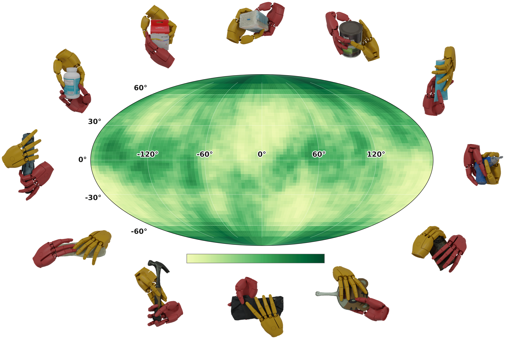
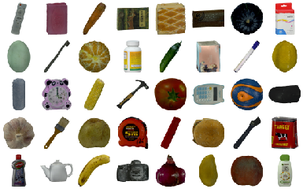
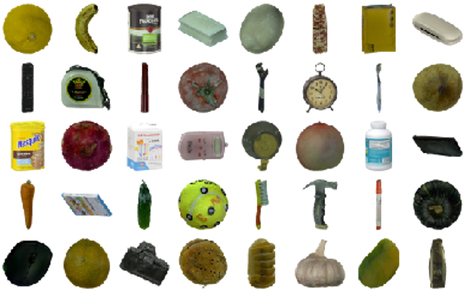
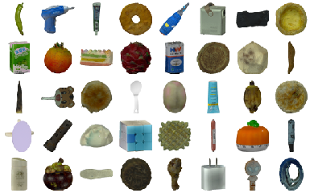

DexHOT transfers between configurations that jointly specify hand articulation and object pose relative to the wrist.
Left · Planned transferA greedy planner selects subgoals from a synthetic configuration pool to reach a distant target.
Right · Long-horizon tasksHuman demonstrations provide subgoals, including previously unseen hand–object configurations.
Seen-object transfer
80.5%Simulation · DexHOTBench
Unseen-object transfer
69.4%Simulation · DexHOTBench
Real-robot transfer
61.5%200 real-robot transfers
Demonstration-guided tasks
90%Six long-horizon tasks
01 / The idea
Beyond object poses.
Make the hand–object relationship an explicit goal.
Abstract
Dexterous manipulation involves not only moving objects, but also arranging the hand around them to maintain useful contacts and enable subsequent actions. Yet many learning-based systems specify goals primarily through object poses or trajectories, leaving hand–object configurations to emerge implicitly.
We introduce DexHOT, which formulates dexterous manipulation as hand–object configuration transfer: moving between feasible configurations that jointly specify hand articulation and object pose relative to the wrist. DexHOT learns a reusable relation-conditioned transfer primitive from synthetic feasible configuration pairs and composes long-horizon behaviors through hierarchical chaining of closed-loop configuration subgoals.
On DexHOTBench with 120 objects, a single policy achieves 80.5% transfer success on seen objects and 69.4% on unseen objects; on a real dexterous hand, it achieves 61.5% success over 200 real-robot transfers and 90% task success on six demonstration-guided tasks. These results show that explicit hand–object goals provide an expressive and composable interface for dexterous manipulation.
02 / Method
Learn locally. Transfer globally.
A single policy learns local configuration transfers and reaches more distant goals through hierarchical chaining.
01
Synthesize
Build feasible hand–object configurations across diverse objects.
02
Learn to transfer
Train a shared policy with synthetic local-goal configuration pairs.
03
Chain subgoals
Compose long-horizon behavior using a planner or demonstrations.
From synthetic configurations to long-horizon control.
One reusable hand policy follows configuration subgoals in closed loop, without task-specific policy training.
Top · TrainingGrasp synthesis and local-goal sampling supply configuration pairs for relation-conditioned policy learning.
Bottom · DeploymentA greedy planner or human demonstration supplies subgoals to the frozen hand policy.
Task 1 / Configuration transfer
Reach a target configuration.
A greedy planner selects intermediate configurations from an object-specific, physically validated pool. The hand policy tracks each subgoal at 30 Hz, with replanning at 1 Hz. In real-robot transfer trials, the arm stays fixed in a palm-down pose, so the fingers drive the configuration change.
Evaluation. Simulation success averages close and far Any2Any transfers with greedy subgoal planning: 80.5% on 40 seen objects and 69.4% on 80 held-out objects. On hardware, DexHOT achieves 61.5% success over 200 transfers across five seen and five unseen objects.
Task 2 / Demonstration-guided manipulation
Follow a sequence of configurations.
One retargeted human demonstration provides configuration subgoals and a wrist trajectory for each task. The policy controls only the hand, tracking subgoals in closed loop at 30 Hz with 1 Hz subgoal updates. A separate arm controller follows the demonstrated wrist trajectory; the hand policy is reused without fine-tuning.
Evaluation. Across six tasks, with five trials per task from a fixed initial layout, DexHOT achieves 90% task-state success (27/30 trials). Success requires all three stages: picking up the object, satisfying the task-specific object-level constraint, and attaining the required hand–object configuration.
03 / Benchmark
DexHOTBench
120 objects. 1.2 million feasible configurations. A benchmark for hand–object configuration transfer.
DexHOTBench
120Objects

1.2MConfigurations

Training objects
40 objects from 40 categories

Unseen instances
40 held-out objects from training categories

Unseen categories
40 objects from 40 held-out categories
DexHOTBench
Diverse configurations across three object splits.
The central Mollweide map shows object z-axis directions relative to the hand across all configuration pools; rotation about the object z-axis is omitted. Colors encode density percentile.
Lower density percentileHigher density percentile
04 / Experiments
From transfer to task.
A shared hand policy transfers across objects and follows configuration subgoals through long-horizon tasks.
01
Beyond object-pose goals
A useful object pose also requires a compatible hand configuration.
Object pose alone vs. hand–object configuration
Same barcode-scanning objective
Object-pose goal only
The target pose can leave the scanner occluded or place the hand at risk of collision.
Configuration-aware execution
The desired hand–object relation keeps the barcode visible and reachable.
02
Simulation configuration transfer
80.5% on seen objects, 74.4% on unseen instances, and 64.4% on unseen categories.
Seen objects
80.5%
Seen object · 01
Seen object · 02
Seen object · 03
Unseen instances
74.4%
Unseen instance · 01
Unseen instance · 02
Unseen instance · 03
Unseen categories
64.4%
Unseen category · 01
Unseen category · 02
Unseen category · 03
03
Real-world configuration transfer
61.5% success and 73.5% transfer progress across 200 transfers on ten objects.
Seen objects
63% success
Banana
Hammer
Shampoo bottle
Tape measure
Medicine bottle
Unseen objects
60% success
Mouse
Tennis ball
Flashlight
Facial cream
Screwdriver
04
Complete demonstration-guided tasks
90% task-state success and 96% stage progress across six long-horizon tasks.
4× speed
Barcode scanning
4× speed
Shelf placement
4× speed
Block assembly
2× speed
Salt shaking
4× speed
Water pouring
4× speed
Screw driving
05 / Citation
BibTeX
@article{gui2026dexhot,
author = {Gui, Zhewei and Bolton, Anthony and Zhang, Jiyao and Chen, Zeyuan
and Yan, Qiyang and Wang, Tianyu and Dong, Hao},
title = {DexHOT: Learning Hand--Object Configuration Transfer for Dexterous Manipulation},
journal = {arXiv preprint},
year = {2026},
}
Acknowledgements
We thank Hangqi Zhou and Zihao Zhao for their assistance with the hardware, and Junhan Wang and Zimu Han for their insightful discussions. This research was supported by the Beijing Natural Science Foundation (26L080330) and the National Natural Science Foundation of China (62376006).